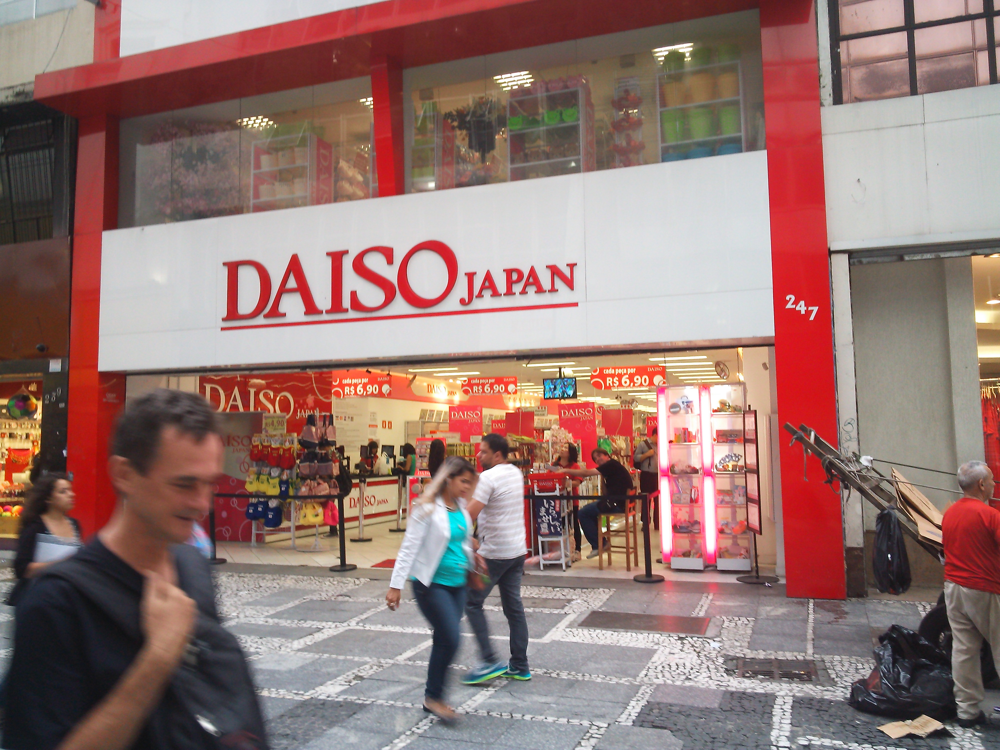

My name is Keisuke Shigematsu, I'm a enginner. I love to draw and all that i connected with the design. In this area a long time ago and during this time I managed to created several successful projects used by people all over the world.
I love the simplicity in the design of web sites. As I see it, people, it's like my work. Naturally do not want to rest on our laurels and will continue further studies to improve soybean skills, creating new interesting creative projects.
研修中の気づきや学び
気づき
学び
日報見てちょ うそ．
日報見てちょ まだ書いてないよー(´･･`)
MY WORK
ウユニ塩湖

ブラジルのダイソー風鈴
ウユニ塩湖ブラジルのダイソー風鈴
SEE MY WORK
What I Love
In my life there is a place for photo. I love to share experience and beautiful moments of your life with others. You can see the first examples of the new work, or photos from my vacation or a walk in the park. I thought you would be intersted.